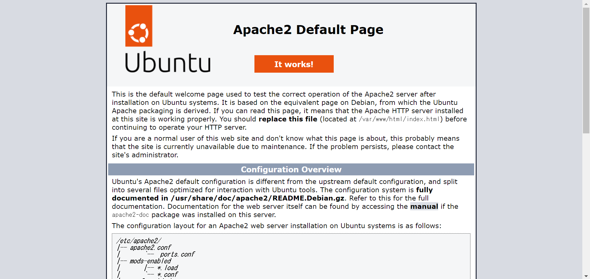
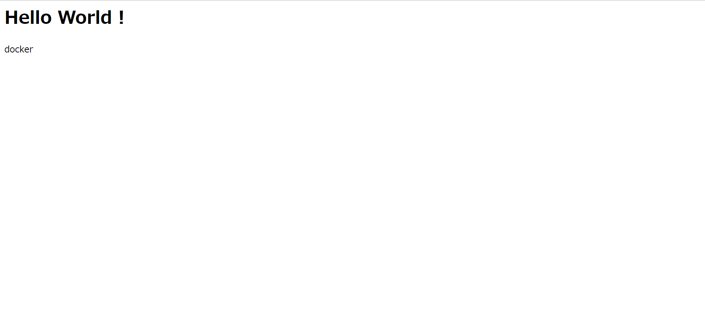

docker とは
docker をインストール
curlコマンドを用いてインストールします。
Note
cURLとは、URLで示されるネットワーク上の場所との間でデータの送受信を行うコマンドである。
curlで取得したshell(シェル)を|でshに渡して実行する。
| ubuntu@ip-172-31-85-199:/var/www/html$ curl -fsSL https://get.docker.com/ | sh
# Executing docker install script, commit: b2e29ef7a9a89840d2333637f7d1900a83e7153f
Warning: the "docker" command appears to already exist on this system.
If you already have Docker installed, this script can cause trouble, which is
why we're displaying this warning and provide the opportunity to cancel the
installation.
If you installed the current Docker package using this script and are using it
again to update Docker, you can safely ignore this message.
You may press Ctrl+C now to abort this script.
+ sleep 20
+ sudo -E sh -c apt-get update -qq >/dev/null
+ sudo -E sh -c DEBIAN_FRONTEND=noninteractive apt-get install -y -qq apt-transport-https ca-certificates curl
>/dev/null
+ sudo -E sh -c mkdir -p /etc/apt/keyrings && chmod -R 0755 /etc/apt/keyrings
+ sudo -E sh -c curl -fsSL "https://download.docker.com/linux/ubuntu/gpg" | gpg --dearmor --yes -o /etc/apt/keyrings/docker.gpg
+ sudo -E sh -c chmod a+r /etc/apt/keyrings/docker.gpg
+ sudo -E sh -c echo "deb [arch=amd64 signed-by=/etc/apt/keyrings/docker.gpg] https://download.docker.com/linux/ubuntu jammy stable" > /etc/apt/sources.list.d/docker.list
+ sudo -E sh -c apt-get update -qq >/dev/null
+ sudo -E sh -c DEBIAN_FRONTEND=noninteractive apt-get install -y -qq --no-install-recommends docker-ce docker-ce-cli containerd.io docker-compose-plugin docker-scan-plugin >/dev/null
+ version_gte 20.10
+ [ -z ]
+ return 0
+ sudo -E sh -c DEBIAN_FRONTEND=noninteractive apt-get install -y -qq docker-ce-rootless-extras >/dev/null
+ sudo -E sh -c docker version
Client: Docker Engine - Community
Version: 20.10.17
API version: 1.41
Go version: go1.17.11
Git commit: 100c701
Built: Mon Jun 6 23:02:46 2022
OS/Arch: linux/amd64
Context: default
Experimental: true
Server: Docker Engine - Community
Engine:
Version: 20.10.17
API version: 1.41 (minimum version 1.12)
Go version: go1.17.11
Git commit: a89b842
Built: Mon Jun 6 23:00:51 2022
OS/Arch: linux/amd64
Experimental: false
containerd:
Version: 1.6.6
GitCommit: 10c12954828e7c7c9b6e0ea9b0c02b01407d3ae1
runc:
Version: 1.1.2
GitCommit: v1.1.2-0-ga916309
docker-init:
Version: 0.19.0
GitCommit: de40ad0
================================================================================
To run Docker as a non-privileged user, consider setting up the
Docker daemon in rootless mode for your user:
dockerd-rootless-setuptool.sh install
Visit https://docs.docker.com/go/rootless/ to learn about rootless mode.
To run the Docker daemon as a fully privileged service, but granting non-root
users access, refer to https://docs.docker.com/go/daemon-access/
WARNING: Access to the remote API on a privileged Docker daemon is equivalent
to root access on the host. Refer to the 'Docker daemon attack surface'
documentation for details: https://docs.docker.com/go/attack-surface/
================================================================================
ubuntu@ip-172-31-85-199:/var/www/html$
|
Docker 公式の GPG 公開鍵をインストールする。
| ubuntu@ip-172-31-85-199:/var/www/html$ curl -fsSL https://get.docker.com/gpg | sudo apt-key add -
Warning: apt-key is deprecated. Manage keyring files in trusted.gpg.d instead (see apt-key(8)).
OK
|
動作確認
docker のインストールが正常かどうかを確認する。
(Hello World を行います。)
| ubuntu@ip-172-31-85-199:/var/www/html$ sudo docker run hello-world
Unable to find image 'hello-world:latest' locally
latest: Pulling from library/hello-world
2db29710123e: Pull complete
Digest: sha256:13e367d31ae85359f42d637adf6da428f76d75dc9afeb3c21faea0d976f5c651
Status: Downloaded newer image for hello-world:latest
Hello from Docker!
This message shows that your installation appears to be working correctly.
To generate this message, Docker took the following steps:
1. The Docker client contacted the Docker daemon.
2. The Docker daemon pulled the "hello-world" image from the Docker Hub.
(amd64)
3. The Docker daemon created a new container from that image which runs the
executable that produces the output you are currently reading.
4. The Docker daemon streamed that output to the Docker client, which sent it
to your terminal.
To try something more ambitious, you can run an Ubuntu container with:
$ docker run -it ubuntu bash
Share images, automate workflows, and more with a free Docker ID:
https://hub.docker.com/
For more examples and ideas, visit:
https://docs.docker.com/get-started/
|
上記のようになれば Docker が動作しています。
docker で Apache を起動
Docker hub のページのUsageのコマンドそのままです。
| ubuntu@ip-172-31-85-199:/var/www/html$ sudo docker run -d --name apache2-container -e TZ=UTC -p 80:80 ubuntu/apache2:2.4-22.04_beta
Unable to find image 'ubuntu/apache2:2.4-22.04_beta' locally
2.4-22.04_beta: Pulling from ubuntu/apache2
e4781cb1bb49: Pull complete
4d7aaa396fc2: Pull complete
b0b327d101f4: Pull complete
Digest: sha256:0e51d4dcc4ceac6d138404e342756c138311063313a7f196a985c22d43217c8b
Status: Downloaded newer image for ubuntu/apache2:2.4-22.04_beta
ed3d84c36c5ed599338dde2540db8329b721e40ee2a03bdb2c95ac6975cfa61e
|
docker run -d --name apache2-container -e TZ=UTC -p 80:80 ubuntu/apache2:2.4-22.04_beta
のコマンドを解説します。
docker: dockerコマンドであるrun: イメージをもとにコンテナを起動する--name apache2-container: コンテナに名前を指定する(今回はapache2-containerという名前)-e TZ=UTC: 環境変数を設定(TZ(タイムゾーン)をUTCに設定)-p 80:80: ポートについての設定(:の前の80はホスト OS 側のポート、:の後の80はコンテナ内のポート)ubuntu/apache2:2.4-22.04_beta: Docker イメージを指定(今回は Docker hub で公開されているイメージを指定)
動作確認
Note
SSH接続した際に使ったIP アドレスをブラウザに入力する。

上記のような画面が表示されます。Apach2 が動作していることが確認できます。
自分のソースコード(HTML)を表示させる
| ubuntu@ip-172-31-85-199:/var/www/html$ sudo docker run -d --name apache2-container -e TZ=UTC -p 80:80 -v "$PWD":/var/www/html/ ubuntu/apache2:2.4-22.04_beta
c26c80a7ef70cc1cc1516c38a32283caff3b085872b58cba66ea9cdf29a1f292
|
/var/www/htmlで上記のコマンドを実行する。
重要なのは、-v "$PWD":/var/www/html/です。
-vはディレクトリの中のコードを共有するオプションです。今回は、"$PWD":/var/www/html/であり、"$PWD"(ホスト OS のソースコード)を/var/www/html/(コンテナ内のソースコード)に置き換えさせる。つまり、コンテナ内の/var/www/html/に、あなたが書いたindex.htmlとindex.phpに置き換えられる。
| ubuntu@ip-172-31-85-199:/var/www/html$ cat index.html
<h1>Hello World !</h1>
<p>docker</p>
|
コンテナを起動中に、index.htmlを変更してみましょう。上記のように編集してみてください。

上記のような画面に変化することが確認できます。
ファイルの変更が即座にコンテナに反映されます。
Docker の基本操作
コンテナを確認
| ubuntu@ip-172-31-85-199:/var/www/html$ sudo docker ps
CONTAINER ID IMAGE COMMAND CREATED STATUS
PORTS NAMES
c26c80a7ef70 ubuntu/apache2:2.4-22.04_beta "apache2-foreground" About a minute ago Up About a minute
0.0.0.0:80->80/tcp, :::80->80/tcp apache2-container
|
起動しているコンテナを確認するコマンドです。
コンテナを停止
| ubuntu@ip-172-31-85-199:/var/www/html$ sudo docker container stop 5101aed26dfd
5101aed26dfd
|
docker psで確認したコンテナのCONTAINER IDを指定してコンテナを停止できます。
コンテナを削除
| ubuntu@ip-172-31-85-199:/var/www/html$ sudo docker container rm 5101aed26dfd
5101aed26dfd
|
docker psで確認したコンテナのCONTAINER IDを指定してコンテナを削除できます。
image を確認
| ubuntu@ip-172-31-85-199:/var/www/html$ sudo docker images
REPOSITORY TAG IMAGE ID CREATED SIZE
ubuntu/apache2 2.4-22.04_beta 7a3c9c370072 5 days ago 181MB
hello-world latest feb5d9fea6a5 8 months ago 13.3kB
ubuntu@ip-172-31-85-199:/var/www/html$ sudo docker image rm feb5d9fea6a5
Untagged: hello-world:latest
Untagged: hello-world@sha256:13e367d31ae85359f42d637adf6da428f76d75dc9afeb3c21faea0d976f5c651
Deleted: sha256:feb5d9fea6a5e9606aa995e879d862b825965ba48de054caab5ef356dc6b3412
Deleted: sha256:e07ee1baac5fae6a26f30cabfe54a36d3402f96afda318fe0a96cec4ca393359
|
EC2 に存在する Docker イメージを一覧で確認するコマンドです。
エラー
sudo つけ忘れ
| ubuntu@ip-172-31-85-199:/var/www/html$ docker container stop c26c80a7ef70
Got permission denied while trying to connect to the Docker daemon socket at unix:///var/run/docker.sock: Post
"http://%2Fvar%2Frun%2Fdocker.sock/v1.24/containers/c26c80a7ef70/stop": dial unix /var/run/docker.sock: connect: permission denied
|
sudoをつけ忘れるとエラーになります。
Docker コマンドは root ユーザーのみが実行可能です。
解決策
sudoをつけましょう
ポート被り
| ubuntu@ip-172-31-85-199:/var/www/html$ sudo docker run -d --name apache2-container2 -e TZ=UTC -p 80:80 -v "$PWD":/var/www/html/ ubuntu/apache2:2.4-22.04_beta
d188d468786a0d69d6db3ed73172c21341dcff1da28b8cf22f39fa411ae9321e
docker: Error response from daemon: driver failed programming external connectivity on endpoint apache2-container2 (04e52919727a2438fd6495394991ecffb16bb7c837ac987d5bb10b8a00ab4c6d): Bind for 0.0.0.0:80 failed: port is already allocated.
|
ほかのコンテナやミドルウェアで80番ポートをすでに使用している場合にエラーになります。
解決策
同じポート番号を使わないようにしましょう。
コンテナのポート番号を変更、または、すでに起動済みのミドルウェア、コンテナを停止させましょう。
コンテナ名の重複
| ubuntu@ip-172-31-85-199:/var/www/html$ sudo docker run -d --name apache2-container2 -e TZ=UTC -p 80:80 -v "$PWD":/var/www/html/ ubuntu/apache2:2.4-22.04_beta
docker: Error response from daemon: Conflict. The container name "/apache2-container2" is already in use by container "5b35aea1656e7990eaf87726969da5029b9c058a96867cf26546683b82491763". You have to remove (or rename) that
container to be able to reuse that name.
See 'docker run --help'.
|
すでに同一の名前のコンテナが存在している場合にエラーになります。
解決策
コンテナ名を変更しましょう
参考
Docker のインストール
よく使う curl コマンドのオプション